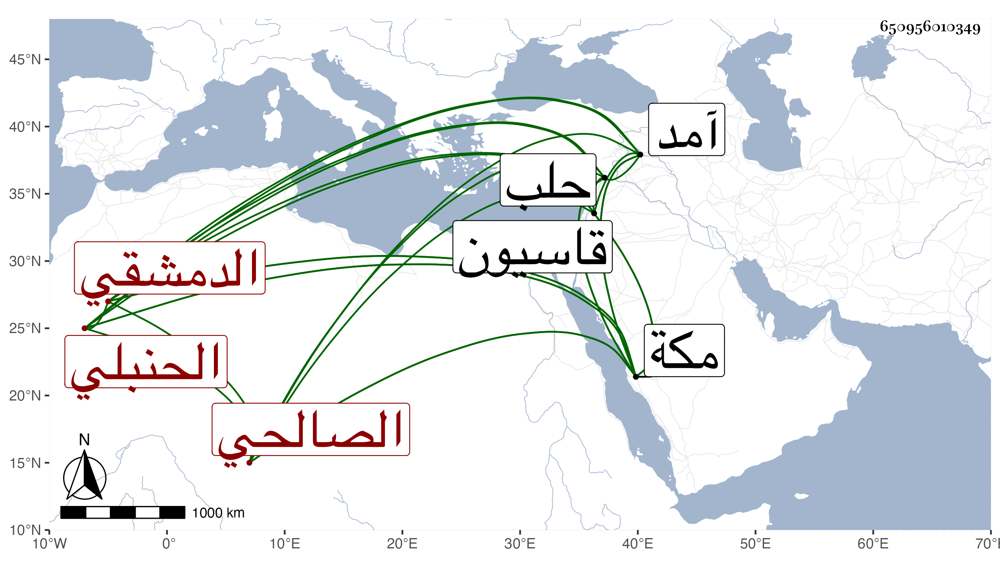

0902Sakhawi.DawLamic.ITO20230111-ara1.EIS1600.650956010349
Biography ID: 650956010349
235
عبد الرحمن بن سليمان بن أبي الكرم بن سليمان الزين أبو الفرج الدمشقي الصالحي الحنبلي علامة الزمان وترجمان القرآن وناصح الاخوان ويعرف بأبي شعر . ولد في ثالث عشر شعبان سنة ثمانين وسبعمائة وقيل سنة ثمان وثمانين وقرأ القرآن على ابن الموصلي وحفظ الخرقي وغيره وتفقه بجماعة منهم الزين بن رجب قرأ عليه من أول المقنع إلى أثناء البيع وكذا انتفع بالشهاب بن حجي وسمع من عبد القادر بن إبراهيم الأرموي والجمال بن الشرائحي وعائشة ابنة ابن عبد الهادي في آخرين بل سمع هو وابنه إبراهيم الماضي من شيخنا في رجوعه من حلب سنة آمد بالعادلية المسلسل والقول المسدد واغتبظ شيخنا بقدومه عليه وبرز لتلقيه حافيا ، وكان إماما علامة متقدما في استحضار الفقه واسع الاطلاع في مذاهب السلف ومعرفة أحوال القوم ذاكرا لنبذة من الجرح والتعديل عفيفا نزها ورعا متقشفا منعزلا عن الناس معظما للسنة وأهلها بارعا في التفسير مستحضرا لكثير من ذلك جيد التذكير مع المهابة والوقار وجمال الصورة والحياء وكثرة الخشوع ولطف المزاج وحسن النادرة والفكاهة وسلامة الصدر ومزيد التواضع وقلة الكلام وعذوبة المنطق وعدم التكلف والمثابرة على التلاوة والتهجد والعبادة والأمر بالمعروف والنهي عن المنكر والمحبة الزائدة للعلم والرغبة في مطالعته واقتناء كتبه بحيث اجتمع له من الأصول الحسان ما انفرد به عن أهل بلده وصار عديم النظير في معناه حسنة من حسنات الدهر انتفع به الناس في المواعظ وغيرها وأحبه الخاص والعام وكثرت أتباعه واشتهر ذكره وبعد صيته ومع ذلك فعودي وأوذي ولم تسمع منه كلمة سوء في جد ولا هزل ، وجاور بمكة عودا على بدء فأخذ عنه الأكابر من أهلها ووعظ فيها حتى في جوف البيت الحرام وكان يزدحم عليه الخلق هناك وحدثني المحيوي عبد القادر المالكي وهو ممن أخذ عنه بكثير من كراماته وبديع إشاراته ، وقال البقاعي اشتغل في غالب العلوم النافعة حتى فاق فيها وله في التفسير عمل كثير ويد طولى ، وكذا عظمه التقي بن قندس ثم تلميذه العلا المرداوي ووصفه بالامام شيخ الاسلام العالم العامل العلامة الزاهد الورع الرباني المفسر الأصولي النحوي الفقيه المحدث المحقق وقال غيره انتفع به خلق وله مقالبات مع المبتدعين بسبب أصول الدين ، وترجمته قابلة للبسط وحدث سمع منه الفضلاء وذكره المقريزي في عقوده وأنه تخرج بالشهاب ابن حجي وتبتل للعبادة وتصدى للوعظ فبرع في التفسير وكثر استحضاره له وصار له أتباع وعودي وأوذي ، وجاور بمكة مرتين ووعظ بها في جوف البيت وكان يزدحم عليه الخلق هناك ويحصل بكلامه صدع في القلب مع الفوائد الجليلة في علوم عديدة لأنه امام في الفقه مستحضر لمذاهب السلف وغيرها عارف بالحديث وعلله من جرح وتعديل وانقطاع وارسال مشارك في النحو والأصول متعبد خائف من الله . ومات بعد أن تعلل أشهرا في ليلة السبت سادس عشر شوال سنة أربع وأربعين بسفح قاسيون ودفن بقرب قبر الموفق بن قدامة من الروضة بالسفح رحمه الله ونفعنا ببركاته .
